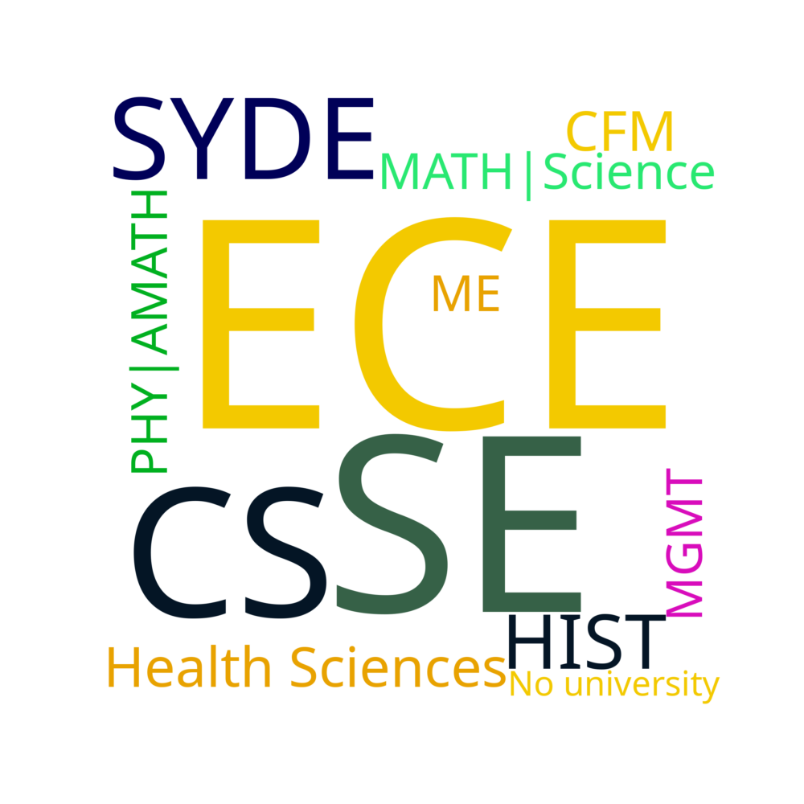
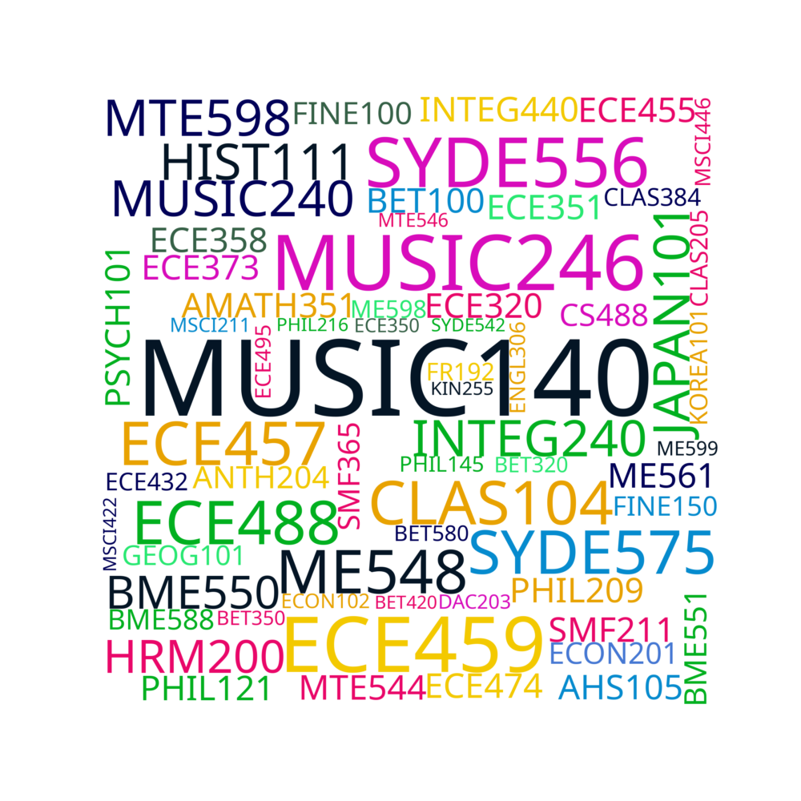
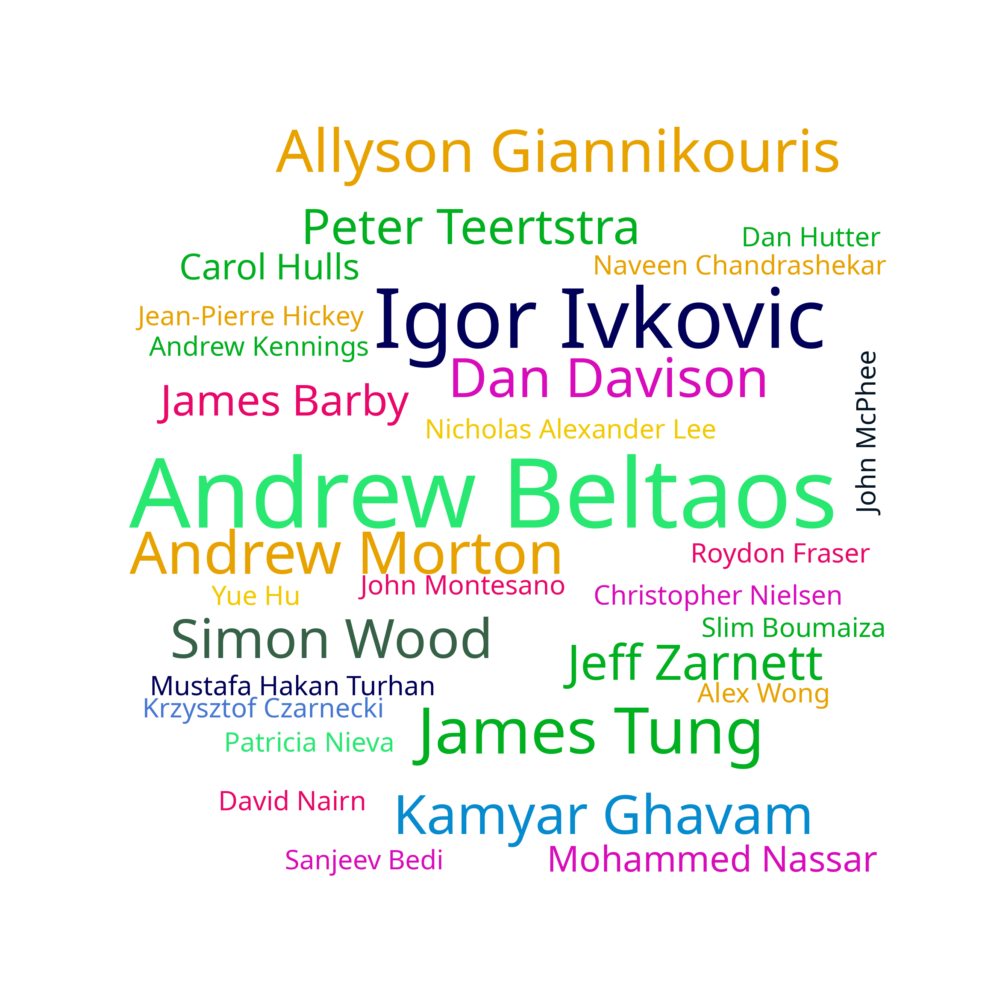

View this website on desktop for the best experience!
First Year Living
A lot of us lived off-campus in first year! There were significant amounts of people living in the UWP area, and less respondants who lived in REV/MKV.
High School vs. University Average
There's a slight positive correlation between the high school average and cumulative university average
Cumulative University Average Distribution
The mean cumulative average was 83%
Averages by Term
The 3B and onward bottom fences got significantly better... Probably due to COVID. This pattern was evident in the 2020 Profile as well,
starting in 4A
Lecture Attendance by Term
Oh the steady climb of truancy... Although the hike from 3B and onwards are heavily affected by COVID. For those terms, respondants were prompted to respond with how often they attended online live lectures if available.
Tutorial Attendance by Term
This is even more dramatic, probably because there weren't marks for attendance in tutorials after 1A
Workload by Term
2B or not 2B... However, terms got more busy after 2B as well.
Stress by Term
2B's reputation lives on!
CR/NCR Choice in 3A
Because of COVID, the university offered to let students choose between CR/NCR (pass/fail) grading and normal grading in 3A. Less than 10% of the respondants used the CR/NCR option.
Number of Failed Projects
Around 20% of the respondants failed at least one project.
Number of Failed Midterms
Close to 50% of the respondents failed at least one midterm
Number of Failed Finals
And around 35% of the respondents failed at least one final
Number of Failed Courses
Twelve respondents failed at least one course, but graduated!
Number of Failed Terms
A few people failed some terms, but perservered and graduated
Work Ethic
📉 | Let's just say that we got more efficient as the years passed by
Notetaking Habits
Notetaking dramatically decreased between first and fourth year with close to 20% of respondents not taking notes in fourth year. There was a significant rise in people who used digital notetaking tools as well
How much did you keep up with classes?
People were less on-top of classes in fourth year rather than first year.
When did you do projects?
Most people did projects last-minute throughout university. It's hard balancing projects, tests, social life and sleep!
Exam Study Habits
Exam Prepardness slightly decreased from first year to fourth year as well.
Satisfaction with Tron vs. Average
Unsurprsingly, there was a correlation between how satisfied you were with the program and the average that you got. The arrow of causation could be pointing in either direction here, though.
Options Pursued
Most people didn't pursue any options, but the AI, Computing and Management options were popular amongst those who did pursue one.
Would You Choose Tron Again?
Around 60% of the class would do Tron again if they could choose to.
What Program Would You Do Instead of Tron?

Out of the people who wouldn't, most people would have done Electrical and Computer Engineering, Software Engineering or Computer Science given what they know today. Others would leave engineering altogether and pursue other passions.
Parental Education vs. Average
There's not too much of a correlation between parental education and universty average.
Family Income vs. Average
Similarly, the effects of family income are quite decoupled from the cumulative university average
Was your FYDP only Mechatronics Students?
Most people sticked to the class for their FYDP groups.
Pride vs. Care
If you cared more about your FYDP, you were more proud of it.
FYDP Advice
Start prototyping early, ignore the clear boundaries between 481/482 (ie where it's suggested to design and 481 and prototype in 482 - this rushes things too much towards the end of 482 when symposium approaches, just start building early).
DO NOT WAIT UNTIL THE LAST MINUTE
Teamwork makes the dream work. Don't sleep on project management
Get started early, especially for any hardware components because 4B is a very busy term for coursework
Work with people you wanna work with and make sure you’re all on the same page for amount of effort you want to put in to it
People had varied pieces of advice for FYDP, I tried to show quotes that were representative of the sentiment of a large number of people
Did you plan to go on exchange?
More than a tenth of the class planned to go on exchange...
Planned Exchange: Did You End up Going?
... but only two people ended up going. Exchange in Mechatronics is hard to do in the first place because of the strict course matching requirements, but COVID took away the ripe exchange term of 3B.
Most Interesting Core Course
We liked the algorithms (MTE 140) and RTOS (MTE 241) courses the best, probably because a lot of us ended up being more intersted in software over the other parts of mechatronics.
Most Useful Core Course
We found MTE 140 and MTE 241 courses the most useful as well.
Favourite Elective

We took a lot of different electives! We have a lot of different interests outside of Tron, but our top five were:
- MUSIC 140: Popular Music and Culture
- MUSIC 246: Soundtracks: Music in Film
- ECE 459: Programming for Perfomance
- SYDE 556: Simulating Neurobiological Systems
- ECE 488: Multivariable Control Systems
Favourite Professor

Andrew Beltaos and Igor Ivkovic (😢) took the overwhelming lead for being the favourite professors. There were 30 different professors that someone listed as someones favourite, with the majority of them receiving only one vote.
Cheating: Acceptability
Respondants were asked how acceptable they find each of these things from totally nacceptable to totally acceptable. Most people thought that sharing answers to assignments and using the internet to look up small things were quite acceptable. Using other people's work was controversial, and the class did not agree whether this is acceptable or not.
Cheating Prelevance: Pre-COVID
Since COVID drastically increased the accessibility of cheating, respondants were asked for pre and post-COVID cheating prelevance.
Predictably, in-person exams made most of these things impossible.
Cheating Prelevance: COVID
With accessibility to the internet during COVID exams, many people turned to it to ask small things. Most people refrained from using Chegg or being on calls during exams, but it definitely increased.
Cheating Prelevance Difference: Pre-COVID vs. COVID
On this chart, red shows decreases in count and green shows increases in count. Cheating definitely increased because of COVID.
Cheating Guilt
Out of the people who had cheated, they were asked how guilty they felt. Most people didn't really feel guilty. When asked why they cheated, the most common responses were The opportunity was there so I took it
, Felt like everyone else was
and Poorly worded assignments